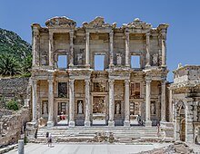
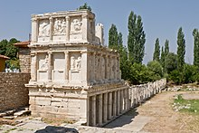

Antiquity
Before 1200 BC, there were four Greek-speaking settlements in Anatolia, including Miletus.[80] Around 1000 BC, Greek migrations to the west coast of Anatolia began; influence of Greek communities were largely limited to these areas until the time of Alexander the Great.[81][82] These settlements were grouped as Aeolis, Ionia, and Doris, after the specific Greek groups that settled them.[83] Numerous important cities were founded by these colonists, such as Ephesus, Halicarnassus, Pergamon, Aphrodisias, Smyrna (now İzmir) and Byzantium (now Istanbul), the latter founded by Greek colonists from Megara in c. 667 BC.[84] Some of these cities, in particular Miletus, went on to found numerous colonies of their own on the coasts of the Black Sea. Miletus was also home to the Ionian school of philosophy, and many of the most prominent pre-Socratic philosophers lived in Miletus. Thales of Miletus is regarded as the first philosopher in the Greek tradition[85][86] and is also historically recognized as the first individual known to have engaged in scientific philosophy.[87][88] Two of the Seven Wonders of the Ancient World, the Temple of Artemis in Ephesus, and the Mausoleum of Halicarnassus, were located in Anatolia.[89]
The Armenian Orontid dynasty, which included parts of what is now eastern Turkey, began in the 6th century BC. In northwestern Turkey, the most significant tribal group in ancient Thrace was the Odyrisians, founded by Teres I.[90]
All of modern-day Turkey was conquered by the Persian Achaemenid Empire during the 6th century BC.[91] The Greco-Persian Wars started when the Greek city-states on the coast of Anatolia rebelled against Persian rule in 499 BC. Queen Artemisia I of Halicarnassus, which was then within the Achaemenid satrapy of Caria, fought as an ally of Xerxes I, King of Persia, against the independent Greek city-states during the second Persian invasion of Greece in 480 BC.[92][93]
Anatolia fell to Alexander the Great in 334 BC,[94] which led to increasing cultural homogeneity and Hellenization in the area,[14] which met resistance in some places.[17] Following Alexander's death in 323 BC, Anatolia was subsequently divided into smaller Hellenistic kingdoms, all of which became part of the Roman Republic by the mid-1st century BC.[95] Hellenization accelerated under Roman rule, and by the early centuries of the Christian Era the local Anatolian languages and cultures had become extinct, being largely replaced by ancient Greek language and culture.[96]
From the 1st century BC up to the 3rd century AD, large parts of modern-day Turkey were contested between the Romans and neighboring Parthians through the Roman-Parthian Wars.
Galatia was an ancient area in the highlands of central Anatolia inhabited by the Celts. The term "Galatians" came to be used by the Greeks for the three Celtic peoples of Anatolia: the Tectosages, the Trocmii, and the Tolistobogii.[97][98] By the 1st century BC the Celts had become so Hellenized that some Greek writers called them Hellenogalatai.[99] The Kingdom of Pontus was a Hellenistic kingdom, centered in the historical region of Pontus and ruled by the Mithridatic dynasty of Persian origin,[100][101][102][103] which may have been directly related to Darius the Great.[104][103] The kingdom was proclaimed by Mithridates I in 281 BC and lasted until its conquest by the Romans in 63 BC. Pontus reached its largest extent under Mithridates VI the Great, who conquered Colchis, Cappadocia, Bithynia, and the Greek colonies of the Tauric Chersonesos. After a long struggle with Rome in the Mithridatic Wars, Pontus was defeated. All ancient regions and territories corresponding to modern Turkey eventually became part of the Roman Empire, and many of them retained their historic names in classical antiquity as Roman provinces.